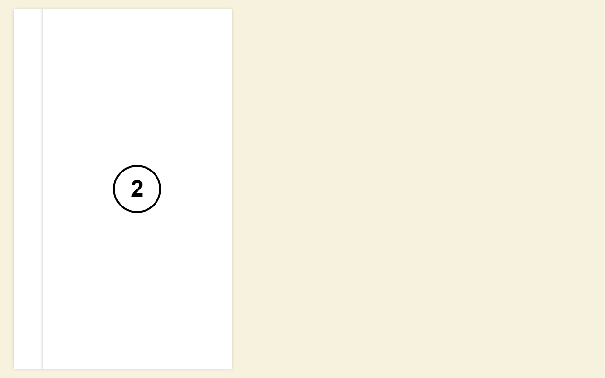
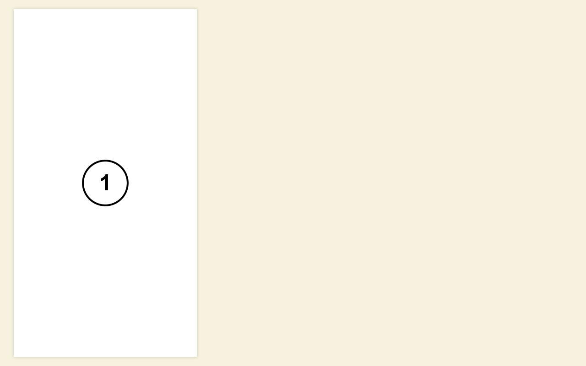
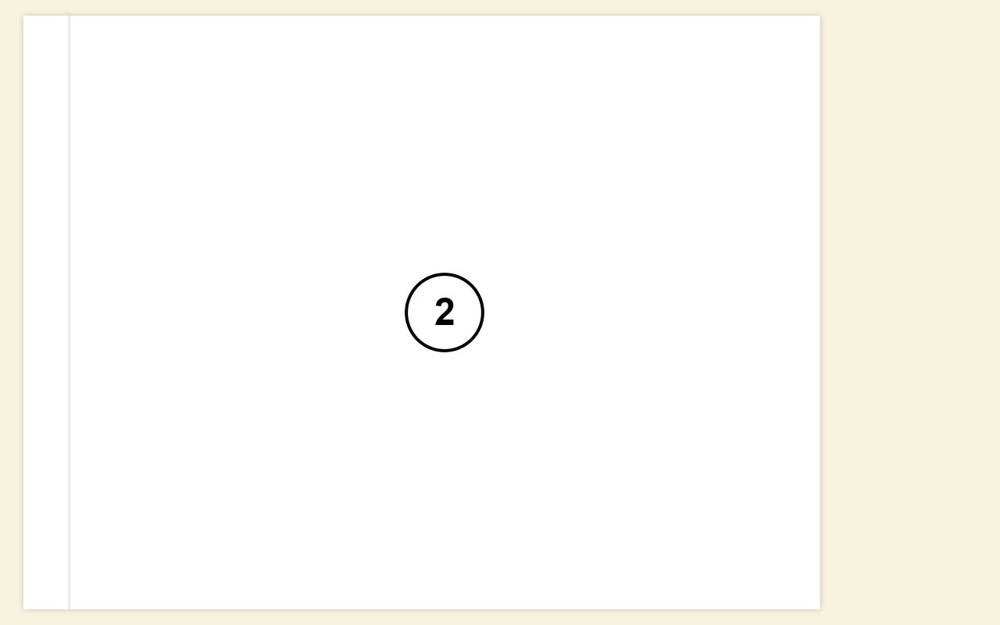
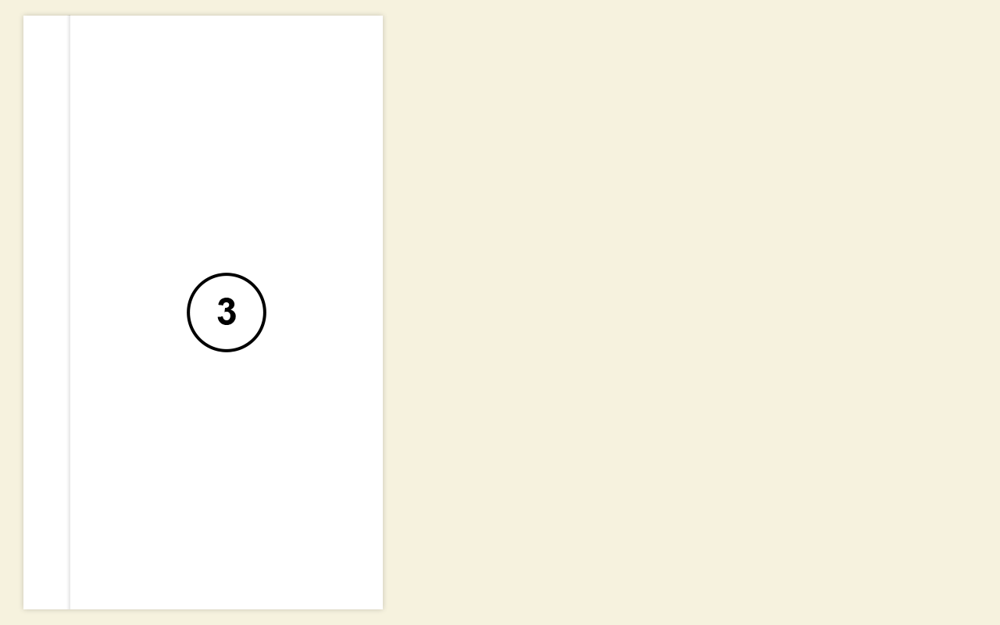

"Новая версия 2ГИС"
Разрабатывается новая версия 2ГИС. Было принято решение располагать весь контент на карточках.
Карточки размещаются «колодой» друг над другом. Каждая следующая карточка располагается выше предыдущей. Последняя (верхняя) карточка, если она не единственная, сдвигается относительно «колоды» по оси x на 60 пикселей. Карточки занимают всю доступную высоту экрана.

Если карточка единственная, то она располагается без отступа.

Карточки бывают двух видов: узкие и широкие.

На фоне планируется разместить карту. Пока, при наведении на всё пространство, не занятое карточками, цвет фона должен меняться на #e9e6d3.
На карточке отображается её порядковый номер.

Карточки описываются массивом такого вида:
var cards = [
{
type: 'narrow'
},
{
type: 'wide'
}
];Параметр type для каждого элемента отвечает за то, какого типа карточку выводить — узкую (narrow) или широкую (wide).
cards.js со стартовым набором карточек;
cards.js может быть заменен на любой другой валидный файл, соответствующий формату;Click по карточкам удаляет последнюю карточку. Shift+Click — добавляет новую карточку сверху типа narrow, Shift+Alt+Click — добавляет новую карточку сверху типа wide;Shift+Click была добавлена новая карточка, кнопка «Назад» в браузере, возвращает страницу на шаг назад, то есть удаляет последнюю карточку.В работе используется библиотека jQuery.
1. git clone https://github.com/6thSence/Maps.git cards
2. cd cards
3. npm install
4. bower install
5. gem install compass
6. gulp